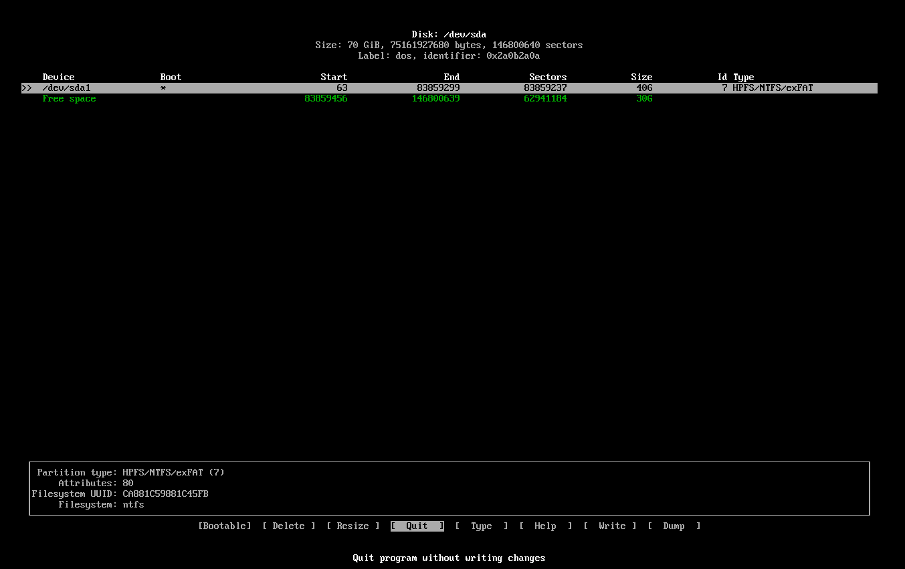

Welcome to the simplified Arch Install Guide
Step 1: Getting the ISO
Goto https://archlinux.org/download to get an install ISO
Step 2: Putting the ISO on a USB
Goto https://rufus.ie to get a copy of Rufus
Then open Rufus select your USB drive and ISO then Click the "START" button
Step 3:Connect to WIFI (Skip if on Ethernet)
Type "iwctl"
Step 4: Partition the Disk
Open "cfdisk", select the disk or partition you want to use
